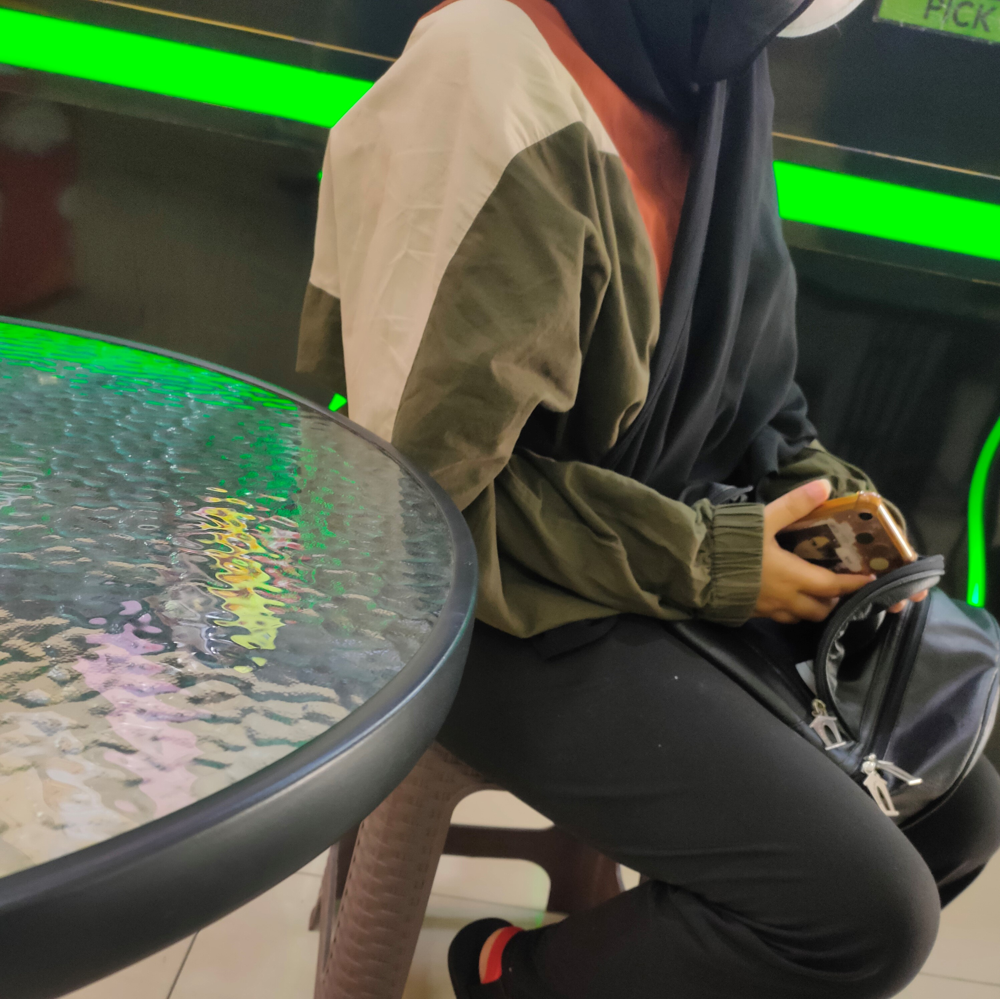
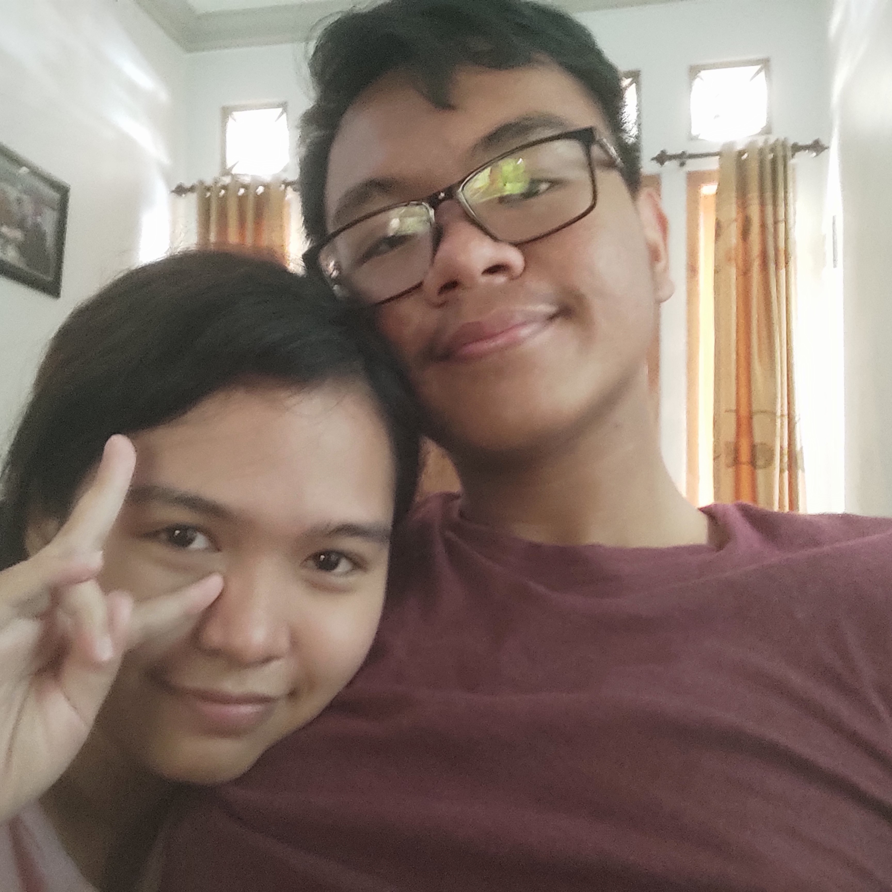

Some Pictures And Memories Of My Beatiful Girlfriend That I Adore Everyday
-

Our first meeting after like 3 years of no contact. tbh i was surprised at how much you didnt change (apart from physically) you were still as cute as i remembered, the way you laugh and talk is really something i still remembered even after 3 years. still to this day sometimes i was wondering how the hell did this end well, i fucked things up worst than nopal book "date" and yet i was still able to be with someone as pretty as you.
-
I know i didn not participate in this event, and you collapsed due to overworked after the event, still you looked really cute and beatiful here. And the fact that it got to the point where you got sick after the event means that you gave everything you have for this event, still next time know your limit and dont overworked yourself, still your cosplay and decoration was really cool.
-
This was the first time we meet again after like 2 months due to college and ospek, and tbh i was surprised (in a good way) at how you look different yet still has the same vibes as the old Tiwi i know, lots of dumb things happened, and rain was the prob the most annoying one I still remembered how we somehow managed to spent so much time at the gramedia doing absolutely nothing other than goofing around and looking at random books, good memories.
-
This was the time when Reuben fucking forgot that he supposed to pick me up on the station, i remembered we did our first ever hug this time, and we just spent the entire night talking, chilling together, i dont know why but i enjoyed every seconds of it. Actually if i remembered correctly we spent almost the entire day just talking. Also i rememberedc clearly that we were holding hand for like the last 50 meinutes of the movie, maybe my arm feel abid weird due to not moving in a long time after that, but it was a really amazing experience.
-
This one was really fun, like most of the others are just us chilling this one is actually us going outside and doing something, lots of fun you were being cute as usual and this one is random but i really like the way you say "molen". This one is also really memorable due to the fact that i was getting a new haircut, an awesome movie, and... well the hugs thingy, ehe.
-
I have nothing to say for this one tbvh, it was simply amazing, one of my core memories now, it was fun, chill and maybe a bit of jumpscare wkwkwk, you were the cutest girl i know that day, to the point where i just want to bite you for soe reason, the cafe part was also good, not as a good as the 'Disney+ N Chill' part but it was with you so it was good.
There are still lots of memories but i think it wouldve been too long so im just going to put the image below for some the memories that of our time together ~ ♥

